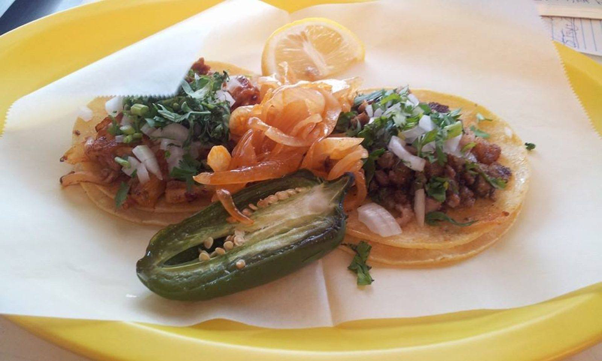

Tacos
Barbacoa and fajita tacos topped with onion and cilantro, with lime on the side.
Mexican food truck · Kyle, TX
Barbacoa and fajita tacos, quesabirrias with consommé, and big tortas.

What we serve
Fresh, flavorful plates.
Barbacoa and fajita tacos topped with onion and cilantro, with lime on the side.

Big, flavorful tortas with full fillings.

Tender meat, melted cheese and a cup of consommé for dipping.
4.2 ★ · 343 Google reviews
The fajita tacos were delicious! The food was great, and the service was excellent. I really like the new location, and everything tasted fresh and flavorful.…
The quesabirrias were SO good! 🤤 The meat was tender and flavorful, the cheese was perfectly melted, and the consommé was delicious. Everything tasted fresh and authentic, and the portions were great. Definitely one of the best Mexican food trucks I’ve tried! 🌮🔥 I’ll definitely be coming back for more!
This is the best place to get a Torta in the area. I’ve tried a few other places and their tortas are not as tasty and they’re much smaller. Nice seating area that is inside with air conditioning.…
Nuestra historia
Fresh, flavorful food, full plates and fair prices. Cool off in the seating area inside.
Open 5 PM Tuesday through Friday, 9 AM on weekends. Late nights, until midnight, or 1 AM Saturdays.

Ven a vernos
1701 E Bebee Rd, Kyle, TX 78640
Grab a table in the air-conditioned seating area. Cash or a payment app like Cash App.